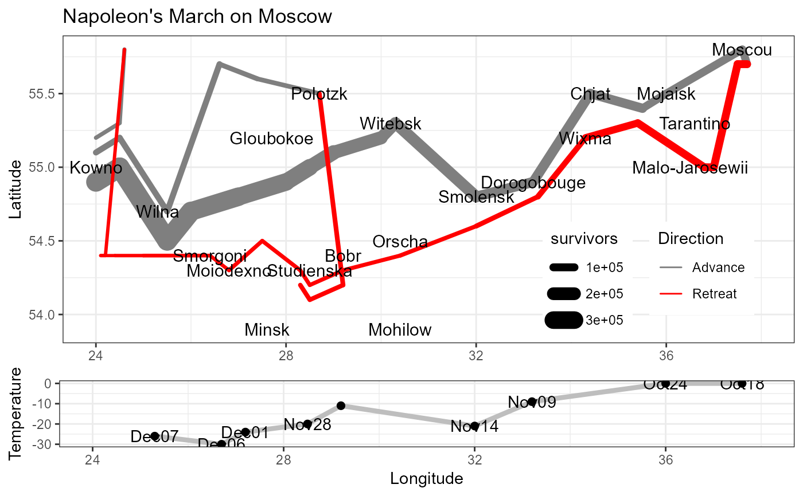

Data from Minard's famous graphic map of Napoleon's march on Moscow
Source:R/data-concepts.R
Minard.RdCharles Joseph Minard's graphic depiction of the fate of Napoleon's Grand Army in the Russian campaign of 1815 has been called the "greatest statistical graphic ever drawn" (Tufte, 1983). Friendly (2002) describes some background for this graphic, and presented it as Minard's Challenge: to reproduce it using modern statistical or graphic software, in a way that showed the elegance of some computer language to both describe and produce this graphic.
Format
Minard.troops: A data frame with 51 observations on the
following 5 variables giving the number of surviving troops.
longLongitude
latLatitude
survivorsNumber of surviving troops, a numeric vector
directiona factor with levels
A("Advance")R("Retreat")groupa numeric vector
Minard.cities: A data frame with 20 observations on the following 3
variables giving the locations of various places along the path of
Napoleon's army.
longLongitude
latLatitude
cityCity name: a factor with levels
BobrChjat...WitebskWixma
Minard.temp: A data frame with 9 observations on the following 4
variables, giving the temperature at various places along the march of
retreat from Moscow.
longLongitude
tempTemperature
daysNumber of days on the retreat march
datea factor with levels
Dec01Dec06Dec07Nov09Nov14Nov28Oct18Oct24
Source
Originally given by Lee Wilkinson, in a text file associated with The Grammar of Graphics (1990). Springer.
References
Friendly, M. (2002). Visions and Re-visions of Charles Joseph Minard, Journal of Educational and Behavioral Statistics, 27, No. 1, 31-51.
Friendly, M. (2003). Re-Visions of Minard. http://datavis.ca/gallery/re-minard.html
Examples
data(Minard.troops)
data(Minard.cities)
data(Minard.temp)
#' ## Load required packages
require(ggplot2)
require(scales)
#> Loading required package: scales
require(gridExtra)
#> Loading required package: gridExtra
#>
#> Attaching package: 'gridExtra'
#> The following object is masked from 'package:dplyr':
#>
#> combine
#' ## plot path of troops, and another layer for city names
plot_troops <- ggplot(Minard.troops, aes(long, lat)) +
geom_path(aes(linewidth = survivors, colour = direction, group = group),
lineend = "round", linejoin = "round")
plot_cities <- geom_text(aes(label = city), size = 4, data = Minard.cities)
#' ## Combine these, and add scale information, labels, etc.
#' Set the x-axis limits for longitude explicitly, to coincide with those for temperature
breaks <- c(1, 2, 3) * 10^5
plot_minard <- plot_troops + plot_cities +
scale_size("Survivors", range = c(1, 10),
breaks = breaks, labels = scales::comma(breaks)) +
scale_color_manual("Direction",
values = c("grey50", "red"),
labels=c("Advance", "Retreat")) +
coord_cartesian(xlim = c(24, 38)) +
xlab(NULL) +
ylab("Latitude") +
ggtitle("Napoleon's March on Moscow") +
theme_bw() +
theme(legend.position = "inside",
legend.position.inside=c(.8, .2),
legend.box="horizontal")
#' ## plot temperature vs. longitude, with labels for dates
plot_temp <- ggplot(Minard.temp, aes(long, temp)) +
geom_path(color="grey", size=1.5) +
geom_point(size=2) +
geom_text(aes(label=date)) +
xlab("Longitude") + ylab("Temperature") +
coord_cartesian(xlim = c(24, 38)) +
theme_bw()
#> Warning: Using `size` aesthetic for lines was deprecated in ggplot2 3.4.0.
#> ℹ Please use `linewidth` instead.
#' The plot works best if we re-scale the plot window to an aspect ratio of ~ 2 x 1
# windows(width=10, height=5)
#' Combine the two plots into one
grid.arrange(plot_minard, plot_temp, nrow=2, heights=c(3,1))
#> Warning: Removed 1 row containing missing values or values outside the scale range
#> (`geom_text()`).
